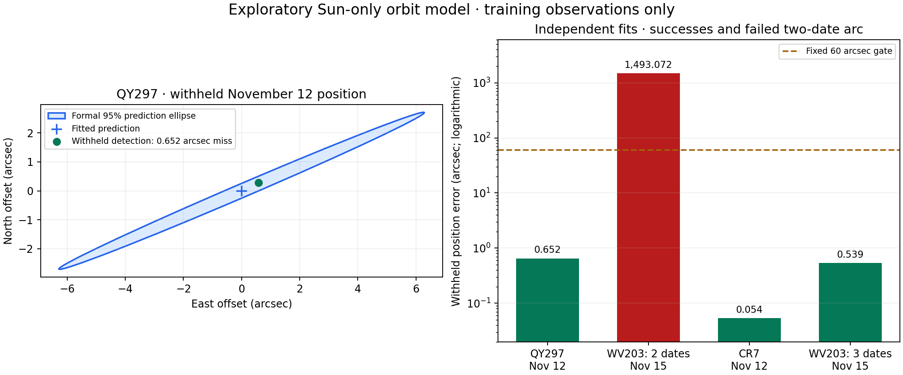

# Restricted moving-object watchlist · physical orbit benchmark Generated 2026-11-20T17:12:27+00:00. ## Daily research scope | Object | Role | |---|---| | 2001 QY297 | Primary distant binary; orbit prediction and external binary-mass benchmark | | 2014 WV203 | Apparent-slow-motion and orbit-ambiguity control | | 2013 CR7 | Independent apparent-slow-motion comparison control | | 2026 ED138 | Priority target awaiting usable public astrometry; no fit in this run | No other moving objects were queried or fitted. Existing broad candidate lists remain historical evidence. Daily research means checking for new usable data; it does not require a fresh observation every night. ## Method fixed for these fits - Six Cartesian heliocentric state parameters, optimized using positions strictly earlier than each stated test cutoff (November 12; also November 15 for the WV203 forward-chain control). - Newtonian solar gravity; ICRF axes; TAI source times converted to TDB for dynamics and UTC for reporting. - Rubin observer position from retained geometric DE441 Sun-from-X05 vectors; Earth/site motion therefore included. - Four iterations of light-travel time; Sun barycentric displacement during light time linearized using its retained velocity. - No target JPL/SBDB state, elements, distance, mass or target ephemeris enters initialization, objective or model selection. - Trial topocentric distances: 2, 3, 5, 10, 20, 40, 80, 160 AU. Lowest training chi-square among converged bound fits selected. - At most 100 optimizer evaluations and eight seconds per initialization. Failed/incomplete trials are retained, not counted as convergence. - Uniform assumed 0.15 arcsec errors per tangent coordinate; fixed project radius 60 arcsec. Neither tuned to held-out residuals. - Local covariance is conditional on this model/error assumption; no shrinkage by a small reduced training chi-square. These are **retrospective withheld-in-fit tests** of known labeled objects, whose later detections were already known. They are not a prospective blind discovery experiment. No outliers were removed and no holdout positions entered fitting. ## Withheld results | Object | Training points / dates | Withheld UTC | Miss (arcsec) | Inside 60 arcsec? | Formal 95% prediction ellipse semiaxes (arcsec) | |---|---|---|---:|---|---| | 2001 QY297 | 9 / 5 | 2026-11-12T01:21:40.083 | 0.652 | True | 6.841 × 0.234 | | 2014 WV203 | 5 / 2 | 2026-11-12T01:47:02.731 | 1022.237 | False | 5374.832 × 13.104 | | 2014 WV203 | 5 / 2 | 2026-11-12T01:49:05.616 | 1022.446 | False | 5375.846 × 13.106 | | 2014 WV203 | 5 / 2 | 2026-11-15T00:21:48.506 | 1493.072 | False | 7841.970 × 16.537 | | 2013 CR7 | 5 / 3 | 2026-11-12T01:21:40.083 | 0.054 | True | 9.639 × 0.359 | | 2014 WV203 | 7 / 3 | 2026-11-15T00:21:48.506 | 0.539 | True | 1.840 × 0.170 | Formal ellipses describe fitted position uncertainty only, under the stated 0.15 arcsec assumption. They omit systematic model errors and alternative branches; inclusion in a very large ellipse is not evidence of a useful orbit. The fixed 60 arcsec search gate is evaluated separately. ## 2001 QY297 · cutoff 2026-11-12 Training dates: 2026-06-27, 2026-06-30, 2026-07-09, 2026-07-12, 2026-10-30; span 124.654 days. Converged bound initializations: 8/8. Training maximum position residual: **0.0723 arcsec**; chi-square **0.4136** for **12** nominal degrees of freedom. Sun-only osculating fit at JD 2461218.907692524 TDB: heliocentric distance **44.5270 AU**, semimajor axis **43.1682 AU**, eccentricity **0.0343**. These are exploratory fit outputs, not catalog-grade replacement elements. The November 12 prediction improves from the earlier October-30 linear diagnostic (128.766 arcsec) to the physical-fit result above. A successful position prediction does **not** establish a precise full orbit. The covariance and orbit-element spread show remaining distance/velocity degeneracy. Illustrative 16th / 50th / 84th percentiles from 512 local Gaussian state draws, conditional on bound draws: | Parameter | 16th | 50th | 84th | |---|---:|---:|---:| | a_AU | 43.2549 | 44.9511 | 54.2222 | | e | 0.0686 | 0.2102 | 0.4504 | | heliocentric_distance_AU_at_reference | 44.3177 | 44.5180 | 44.7449 | Bound draws: 512/512. These are local, assumption-dependent diagnostic spreads, not a validated global posterior. Every initialization, including failed and non-converged trials, is retained in results.json. ## 2014 WV203 · cutoff 2026-11-12 Training dates: 2026-07-09, 2026-10-30; span 112.678 days. Converged bound initializations: 1/8. Training maximum position residual: **0.0359 arcsec**; chi-square **0.1224** for **4** nominal degrees of freedom. Sun-only osculating fit at JD 2461230.906286216 TDB: heliocentric distance **2.5657 AU**, semimajor axis **12.4760 AU**, eccentricity **0.8485**. These are exploratory fit outputs, not catalog-grade replacement elements. **Insufficient date diversity for a trustworthy unique orbit:** a tiny training residual can coexist with a wrong future track. Do not promote this fit to an operational prediction. Every initialization, including failed and non-converged trials, is retained in results.json. ## 2013 CR7 · cutoff 2026-11-12 Training dates: 2026-06-27, 2026-06-30, 2026-10-30; span 124.637 days. Converged bound initializations: 5/8. Training maximum position residual: **0.0810 arcsec**; chi-square **0.5169** for **4** nominal degrees of freedom. Sun-only osculating fit at JD 2461218.924550172 TDB: heliocentric distance **2.7048 AU**, semimajor axis **2.4035 AU**, eccentricity **0.1686**. These are exploratory fit outputs, not catalog-grade replacement elements. Every initialization, including failed and non-converged trials, is retained in results.json. ## 2014 WV203 · cutoff 2026-11-15 Training dates: 2026-07-09, 2026-10-30, 2026-11-12; span 125.670 days. Converged bound initializations: 5/8. Training maximum position residual: **0.0584 arcsec**; chi-square **0.2584** for **8** nominal degrees of freedom. Sun-only osculating fit at JD 2461230.906286216 TDB: heliocentric distance **2.4256 AU**, semimajor axis **2.5770 AU**, eccentricity **0.0948**. These are exploratory fit outputs, not catalog-grade replacement elements. Every initialization, including failed and non-converged trials, is retained in results.json. ## Confirmed earlier full-night QY297 recovery The user supplied the completed Pots report generated 2026-11-20T16:55:37Z: external JPL predictions scored 235,039 indexed November 12 alerts in 145 visits; QY297 ranked first, miss 0.0940 arcsec, with one detection inside 60 arcsec and no differently labeled/unassociated competitor inside. This corrects the previous pending status. **That full-night result uses the external JPL orbit.** This report scores the independently fitted physical prediction against withheld catalog detections only. A full-night all-alert ranking of this new fitted orbit has not run here. Neither result supplies usable-footprint false-match calibration. ## Binary research and thesis potential QY297 is a published binary with a literature system mass (4.105 ± 0.038) × 10^18 kg from its resolved mutual orbit (Grundy et al. 2011, Table 8). The present fit concerns its motion around the Sun; it does not fit the components' 138-day mutual orbit, recover their individual masses or improve the published system mass. A thesis would need a demonstrably new contribution. A bounded possible question is whether Rubin-era unresolved astrometry/photometry can constrain QY297's photocenter motion or binary variability, cross-validated against resolved observations and comparison objects. That is a proposed research direction, not a feasibility result. Ten sparse alert positions do not establish such a signal or a thesis-sized discovery. Feasibility gates: current literature/archival resolved-data audit; actual seeing/SNR/cutout and forced-photometry coverage; expected binary signal versus calibration/centroid systematics; identifiable parameters and simulated recovery; access to additional observations and appropriate academic supervision if pursued as a degree. ## Remaining work, confined to the watchlist 1. Add planetary perturbations and perform global orbit-ambiguity/uncertainty checks before claiming precision ephemerides. 2. Expand withheld date coverage for these same targets. WV203 needs more independent training dates; ED138 needs usable public astrometry. 3. Validate with an established orbit-fitting implementation and new measurements not examined during development. 4. Obtain actual usable detector footprints and masks for controlled matching and sensitivity estimates. 5. Assess QY297 binary-signal feasibility before extending to a mutual-orbit or physical-size/mass analysis. ## Limitations The force model omits planets, solar reflex acceleration in heliocentric dynamics, relativity, resolved mutual motion, astrometric correlations and image-level biases. The linearized Sun displacement during light time is approximate. The eight initialization distances do not exhaust all orbit branches, especially for two-date arcs. Formal covariance assumes the selected branch and is not proof of uniqueness. Results do not establish an unknown-body discovery or Planet Nine. ## Provenance Source IDs, input hashes, state, all trials, withheld predictions and covariances are in results.json. Original source responses and exact observer-geometry request parameters are retained in inputs/. All input times were matched against geometry epochs to within 0.001 second. - Fink SSO API: https://api.lsst.fink-portal.org/api/v1/sso - JPL Horizons observer/frame/time definitions: https://ssd.jpl.nasa.gov/horizons/manual.html - JPL constants: https://ssd.jpl.nasa.gov/astro_par.html - Grundy et al. 2011: https://arxiv.org/abs/1103.2751 - Thirouin et al. 2012, prior QY297 variability research: https://academic.oup.com/mnras/article/424/4/3156/1062105

Formal ellipse assumes independent 0.15-arcsecond errors per coordinate and one local orbit branch; systematic errors and alternative branches are excluded. These are known-object retrospective tests.